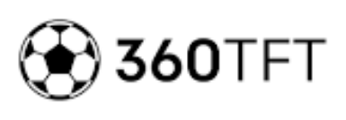

The Football Coach's German Phrasebook
500+ Essential Phrases for Coaching in German
Free guide for English-speaking coaches working with German-speaking players or relocating to Germany, Austria, or Switzerland.
Training Session Commands
Starting & Stopping
| English | German | Pronunciation |
|---|
| Go! / Start! | Los! / Anfangen! | lohs / AHN-fahng-en |
| Stop! / Freeze! | Stopp! / Stehenbleiben! | shtop / SHTAY-en-bly-ben |
| Again! | Nochmal! | NOHKH-mahl |
| Reset! | Zurück! | tsoo-ROOK |
| Take a break | Macht Pause | mahkht POW-zuh |
| Water break | Trinkpause | TRINK-pow-zuh |
| Gather round | Kommt her | komt hehr |
| Listen up | Hört zu | hoert tsoo |
Tempo & Intensity
| English | German | Pronunciation |
|---|
| Faster! | Schneller! | SHNEH-ler |
| Slower! | Langsamer! | LAHNG-zah-mer |
| Game speed! | Spieltempo! | SHPEEL-tem-poh |
| High intensity! | Hohe Intensität! | HOH-uh in-ten-zee-TAYT |
| Keep the tempo | Haltet das Tempo | HAHL-tet dahs TEM-poh |
| Push yourselves | Gebt alles | gaybt AH-les |
| Don't walk | Nicht gehen | nikht GAY-en |
| Sprint! | Sprintet! | SHPRIN-tet |
Movement Commands
| English | German | Pronunciation |
|---|
| Move! | Bewegt euch! | beh-VAYKT oykh |
| Stay there | Bleib da | blyb dah |
| Swap positions | Wechselt die Positionen | VEK-selt dee poh-zee-tsee-OH-nen |
| Rotate! | Rotiert! | roh-TEERT |
| Join the other group | Geh zur anderen Gruppe | gay tsoor AHN-der-en GROO-puh |
| You're in | Du kommst rein | doo komst ryn |
| You're out | Du kommst raus | doo komst rows |
| Next group | Nächste Gruppe | NAYKH-stuh GROO-puh |
Technical Corrections
| English | German | Pronunciation |
|---|
| Use your left foot | Nimm den linken Fuß | nim dayn LINK-en foos |
| Use your right foot | Nimm den rechten Fuß | nim dayn REKH-ten foos |
| Head up! | Kopf hoch! | kopf hohkh |
| First touch | Erste Berührung / Ballannahme | EHR-stuh beh-ROO-rung |
| Body position | Körperhaltung | KER-per-hahl-tung |
| Open your body | Körper aufmachen | KER-per OWF-mahkh-en |
| Check your shoulder | Schulterblick | SHOOL-ter-blik |
| Bend your knees | Knie beugen | knee BOY-gen |
Tactical Instructions
Formations & Positions
| English | German | Pronunciation |
|---|
| Formation | Formation / System | for-mah-TSEE-ohn / zoos-TAYM |
| We play 4-3-3 | Wir spielen Vier-Drei-Drei | veer SHPEE-len feer-dry-dry |
| Goalkeeper | Torwart / Torhüter | TOR-vart / TOR-hoo-ter |
| Centre-back | Innenverteidiger | IN-en-fer-ty-dee-ger |
| Full-back | Außenverteidiger | OW-sen-fer-ty-dee-ger |
| Right-back | Rechter Verteidiger | REKH-ter fer-TY-dee-ger |
| Left-back | Linker Verteidiger | LINK-er fer-TY-dee-ger |
| Defensive midfielder | Sechser / Defensives Mittelfeld | ZEKS-er |
| Central midfielder | Zentrales Mittelfeld | tsen-TRAH-les MIT-el-felt |
| Attacking midfielder | Zehner / Spielmacher | TSAY-ner / SHPEEL-mahkh-er |
| Winger | Flügelspieler / Außen | FLOO-gel-shpee-ler |
| Striker | Stürmer / Mittelstürmer | SHTOOR-mer |
Attacking Principles
| English | German | Pronunciation |
|---|
| Width! | Breite! | BRY-tuh |
| Stretch them | Zieht sie auseinander | tseet zee ows-eye-NAHN-der |
| Find the space | Such den Raum | zookh dayn rowm |
| Between the lines | Zwischen den Linien | TSVISH-en dayn LEE-nee-en |
| Third man run | Dritter Mann | DRIT-ter mahn |
| Overlap | Hinterlaufen | HIN-ter-low-fen |
| Underlap | Vorderlaufen | FOR-der-low-fen |
| Switch the play | Spiel verlagern | shpeel fer-LAH-gern |
| Play forward | Nach vorne spielen | nahkh FOR-nuh SHPEE-len |
| Turn! | Dreh dich! | dray dikh |
| Shoot! | Schieß! | shees |
| Cross it! | Flanke! | FLAHN-kuh |
| One-two | Doppelpass | DOP-el-pahs |
| Give and go | Spiel und geh | shpeel oont gay |
| Support the ball | Unterstütz den Ball | oon-ter-SHTOOTS dayn bahl |
Defensive Principles
| English | German | Pronunciation |
|---|
| Press! | Press! / Anlaufen! | pres / AHN-low-fen |
| High press | Hohes Pressing | HOH-es PREH-sing |
| Drop! | Zurück! | tsoo-ROOK |
| Hold the line | Linie halten | LEE-nee-uh HAHL-ten |
| Squeeze! | Zusammenrücken! | tsoo-ZAH-men-roo-ken |
| Compact! | Kompakt! | kom-PAHKT |
| Cover! | Absichern! | AHP-zikh-ern |
| Mark him! | Deck ihn! | dek een |
| Man on! | Mann! | mahn |
| Behind you! | Hinter dir! | HIN-ter deer |
| Clear it! | Klär den Ball! | klayr dayn bahl |
| Win the ball | Gewinn den Ball | geh-VIN dayn bahl |
| Block the shot | Block den Schuss | blok dayn shoos |
| No foul! | Kein Foul! | kyn fowl |
| Stay goalside | Bleib zwischen ihm und dem Tor | blyb TSVISH-en eem oont daym tor |
Transitions
| English | German | Pronunciation |
|---|
| Transition! | Umschaltspiel! | OOM-shahlt-shpeel |
| Counter-attack! | Konter! | KON-ter |
| Fast break! | Schnell! | shnel |
| Get back! | Zurücklaufen! | tsoo-ROOK-low-fen |
| Recover! | Erholt euch! | er-HOHLT oykh |
| Second ball | Zweiter Ball | TSVY-ter bahl |
| Win the second ball | Hol den zweiten Ball | hohl dayn TSVY-ten bahl |
| Counter-press | Gegenpressing | GAY-gen-preh-sing |
| 6 seconds! | Sechs Sekunden! | zeks zeh-KOON-den |
Set Pieces
| English | German | Pronunciation |
|---|
| Corner kick | Ecke / Eckball | EK-uh / EK-bahl |
| Free kick | Freistoß | FRY-shtohs |
| Throw-in | Einwurf | YN-voorf |
| Penalty | Elfmeter | ELF-may-ter |
| Near post | Erster Pfosten | EHR-ster PFOH-sten |
| Far post | Zweiter Pfosten | TSVY-ter PFOH-sten |
| Attack the ball | Greif den Ball an | gryf dayn bahl ahn |
| Zonal marking | Raumdeckung | ROWM-dek-oong |
| Man marking | Manndeckung | MAHN-dek-oong |
| Wall | Mauer | MOW-er |
| You're in the wall | Du bist in der Mauer | doo bist in der MOW-er |
Match Day Communication
Pre-Match Talk
| English | German | Pronunciation |
|---|
| Today we play against... | Heute spielen wir gegen... | HOY-tuh SHPEE-len veer GAY-gen |
| Their strengths are... | Ihre Stärken sind... | EE-ruh SHTEHR-ken zint |
| Their weaknesses are... | Ihre Schwächen sind... | EE-ruh SHVEH-khen zint |
| Focus on... | Konzentriert euch auf... | kon-tsen-TREERT oykh owf |
| Remember what we trained | Erinnert euch an das Training | er-IN-ert oykh ahn dahs TRAY-ning |
| Play with confidence | Spielt mit Selbstvertrauen | shpeelt mit ZELPST-fer-trow-en |
| Trust each other | Vertraut einander | fer-TROWT yn-AHN-der |
| Leave everything on the pitch | Gebt alles auf dem Platz | gaybt AH-les owf daym plahts |
| Enjoy it | Habt Spaß | hahpt shpahs |
| Let's go! | Los geht's! | lohs gayts |
Halftime Adjustments
| English | German | Pronunciation |
|---|
| Good first half | Gute erste Halbzeit | GOO-tuh EHR-stuh HAHLP-tsyt |
| We need to improve... | Wir müssen verbessern... | veer MOO-sen fer-BES-ern |
| Push higher | Höher stehen | HOE-er SHTAY-en |
| Drop deeper | Tiefer stehen | TEE-fer SHTAY-en |
| Change of formation | Systemwechsel | zoos-TAYM-vek-sel |
| You're coming off | Du kommst raus | doo komst rows |
| You're going on | Du kommst rein | doo komst ryn |
| Stay calm | Bleibt ruhig | blypt ROO-ig |
| Keep doing what we're doing | Weiter so | VY-ter zoh |
Touchline Instructions
| English | German | Pronunciation |
|---|
| Time! | Zeit! | tsyt |
| Slow it down | Ruhig am Ball | ROO-ig ahm bahl |
| Speed it up | Schnell! | shnel |
| Wide! | Breit! | bryt |
| Tighter! | Enger! | ENG-er |
| Push up! | Raus! | rows |
| Get back! | Zurück! | tsoo-ROOK |
| Wake up! | Aufwachen! | OWF-vahkh-en |
| Concentrate! | Konzentration! | kon-tsen-trah-TSEE-ohn |
| Well done! | Gut gemacht! | goot geh-MAHKHT |
| That's it! | Genau so! | geh-NOW zoh |
| Keep going! | Weiter! | VY-ter |
Individual Player Feedback
Positive Reinforcement
| English | German | Pronunciation |
|---|
| Great work! | Gute Arbeit! | GOO-tuh AR-byt |
| Excellent! | Ausgezeichnet! | OWS-geh-tsykh-net |
| That's exactly what I want | Genau das will ich sehen | geh-NOW dahs vil ikh ZAY-en |
| You've improved a lot | Du hast dich sehr verbessert | doo hahst dikh zayr fer-BES-ert |
| Keep it up | Weiter so | VY-ter zoh |
| I'm proud of you | Ich bin stolz auf dich | ikh bin shtolts owf dikh |
| You're working hard | Du arbeitest hart | doo AR-by-test hahrt |
| That was brave | Das war mutig | dahs vahr MOO-tikh |
| Great decision | Gute Entscheidung | GOO-tuh ent-SHY-doong |
| You're a leader | Du bist ein Anführer | doo bist yn AHN-foo-rer |
Constructive Correction
| English | German | Pronunciation |
|---|
| Next time, try to... | Nächstes Mal, versuch... | NAYKH-stes mahl, fer-ZOOKH |
| Think about... | Denk an... | denk ahn |
| You can do better | Du kannst es besser | doo kahnst es BES-er |
| What could you do differently? | Was könntest du anders machen? | vahs KERN-test doo AHN-ders MAHKH-en |
| Let's work on this | Lass uns daran arbeiten | lahs oons dah-RAHN AR-by-ten |
| I know you can do this | Ich weiß, du schaffst das | ikh vys, doo shahfst dahs |
| Don't give up | Gib nicht auf | gip nikht owf |
| Trust the process | Vertrau dem Prozess | fer-TROW daym proh-TSES |
Motivational Phrases
| English | German | Pronunciation |
|---|
| I believe in you | Ich glaube an dich | ikh GLOW-buh ahn dikh |
| You have talent | Du hast Talent | doo hahst tah-LENT |
| Keep working | Arbeite weiter | AR-by-tuh VY-ter |
| Your moment will come | Dein Moment wird kommen | dyn moh-MENT veert KOM-en |
| Show me what you can do | Zeig mir was du kannst | tsyk meer vahs doo kahnst |
| Fight for your place | Kämpf um deinen Platz | kempf oom DY-nen plahts |
| Be patient | Hab Geduld | hahp geh-DOOLT |
| Hard work pays off | Harte Arbeit zahlt sich aus | HAR-tuh AR-byt tsahlt zikh ows |
Goalkeeper-Specific Language
Shot-Stopping
| English | German | Pronunciation |
|---|
| Set position | Grundstellung | GROONT-shtel-oong |
| Get set! | Stell dich! | shtel dikh |
| Stay big | Mach dich groß | mahkh dikh grohs |
| Attack the ball | Greif den Ball an | gryf dayn bahl ahn |
| Dive! | Hechte! | HEKH-tuh |
| Catch it! | Fang ihn! | fahng een |
| Punch it! | Faust raus! | fowst rows |
| Hold it! | Halt ihn! | hahlt een |
Distribution
| English | German | Pronunciation |
|---|
| Play short | Spiel kurz | shpeel koorts |
| Play long | Spiel lang | shpeel lahng |
| Roll it | Roll ihn | rol een |
| Throw it | Wirf | virf |
| Kick it | Schieß | shees |
| Goal kick | Abstoß | AHP-shtohs |
| Find the full-back | Such den Außenverteidiger | zookh dayn OW-sen-fer-ty-dee-ger |
| Take your time | Nimm dir Zeit | nim deer tsyt |
Organizing the Defense
| English | German | Pronunciation |
|---|
| Keeper's ball! | Meiner! | MY-ner |
| Away! | Weg! | vek |
| Leave it! | Lass! | lahs |
| I've got it! | Ich hab ihn! | ikh hahp een |
| Push out! | Rausrücken! | ROWS-roo-ken |
| Watch the runner! | Achtung Hintermann! | AHKH-toong HIN-ter-mahn |
| Near post! | Erster Pfosten! | EHR-ster PFOH-sten |
| Far post! | Zweiter Pfosten! | TSVY-ter PFOH-sten |
Staff & Club Communication
Assistant Coach
| English | German | Pronunciation |
|---|
| Set up the drill | Bau die Übung auf | bow dee OO-boong owf |
| You take this group | Du nimmst diese Gruppe | doo nimst DEE-zuh GROO-puh |
| What did you see? | Was hast du gesehen? | vahs hahst doo geh-ZAY-en |
| Warm them up | Wärm sie auf | verm zee owf |
| Get the bibs | Hol die Leibchen | hohl dee LYP-khen |
| Set up the cones | Stell die Hütchen auf | shtel dee HOOT-khen owf |
Medical Staff
| English | German | Pronunciation |
|---|
| He's injured | Er ist verletzt | er ist fer-LETST |
| Come check on him | Komm schau ihn an | kom show een ahn |
| How serious is it? | Wie schlimm ist es? | vee shlim ist es |
| Can he continue? | Kann er weitermachen? | kahn er VY-ter-mahkh-en |
| He needs ice | Er braucht Eis | er browkht ys |
| When will he be back? | Wann kommt er zurück? | vahn komt er tsoo-ROOK |
Parent Communication
| English | German | Pronunciation |
|---|
| Hello, I'm the coach | Hallo, ich bin der Trainer | HAH-loh, ikh bin der TRY-ner |
| Your son/daughter is doing well | Ihr Sohn/Ihre Tochter macht das gut | eer zohn/EE-ruh TOKH-ter mahkht dahs goot |
| Training is at... | Das Training ist um... | dahs TRY-ning ist oom |
| Please arrive on time | Bitte kommen Sie pünktlich | BIT-uh KOM-en zee POONKT-likh |
| Any concerns? | Haben Sie Fragen? | HAH-ben zee FRAH-gen |
Common Mistakes & False Friends
Warning: These words look similar but have very different meanings!
| English Word | German Trap | Actual Meaning | Correct German |
|---|
| Gift | Gift | Poison! | Geschenk |
| Become | Bekommen | To receive/get | Werden |
| Brave | Brav | Well-behaved | Mutig |
| Also | Also | So/therefore | Auch |
| Fabric | Fabrik | Factory | Stoff |
| Chef | Chef | Boss | Koch |
Cultural Notes:
Punctuality: Germans value punctuality highly. Being late is considered disrespectful.
Formal address: Use "Sie" (formal you) with parents and officials. Use "du" (informal) with players - this is the norm in sports settings.
Directness: German communication tends to be direct and efficient. Don't interpret directness as rudeness.
Handshakes: Firm handshakes are standard. Make eye contact.
Quick Reference: Training Commands
| English | German | Pronunciation |
|---|
| Go! | Los! | lohs |
| Stop! | Stopp! | shtop |
| Again! | Nochmal! | NOHKH-mahl |
| Faster! | Schneller! | SHNEH-ler |
| Slower! | Langsamer! | LAHNG-zah-mer |
| Move! | Bewegt euch! | beh-VAYKT oykh |
| Good! | Gut! | goot |
| Come here | Komm her | kom hehr |
| Listen | Hör zu | hoer tsoo |
| Watch | Schau | show |
Quick Reference: Match Day Commands
| English | German | Pronunciation |
|---|
| Press! | Anlaufen! | AHN-low-fen |
| Drop! | Zurück! | tsoo-ROOK |
| Wide! | Breit! | bryt |
| Shoot! | Schieß! | shees |
| Pass! | Pass! | pahs |
| Hold it! | Halten! | HAHL-ten |
| Time! | Zeit! | tsyt |
| Man on! | Mann! | mahn |
| Switch! | Verlagern! | fer-LAH-gern |
| Well done! | Gut gemacht! | goot geh-MAHKHT |
Quick Reference: Numbers for Formations
| Number | German | Pronunciation |
|---|
| 1 | Eins | yns |
| 2 | Zwei | tsvy |
| 3 | Drei | dry |
| 4 | Vier | feer |
| 5 | Fünf | foonf |
| 6 | Sechs | zeks |
| 7 | Sieben | ZEE-ben |
| 8 | Acht | ahkht |
| 9 | Neun | noyn |
| 10 | Zehn | tsayn |
| 11 | Elf | elf |
Want to take your coaching to the next level?
Join the Football Coaching Academy for courses, community, and resources to help you become a better coach.
Join the Academy